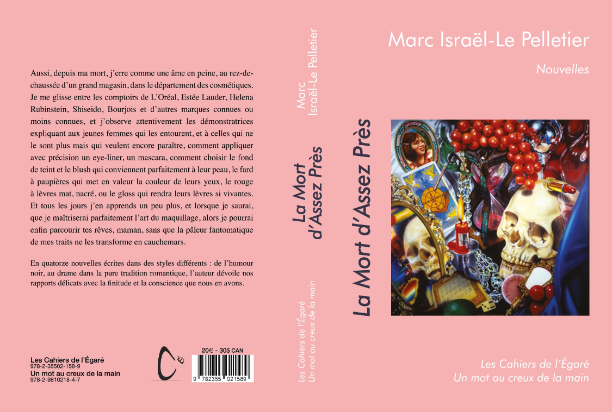
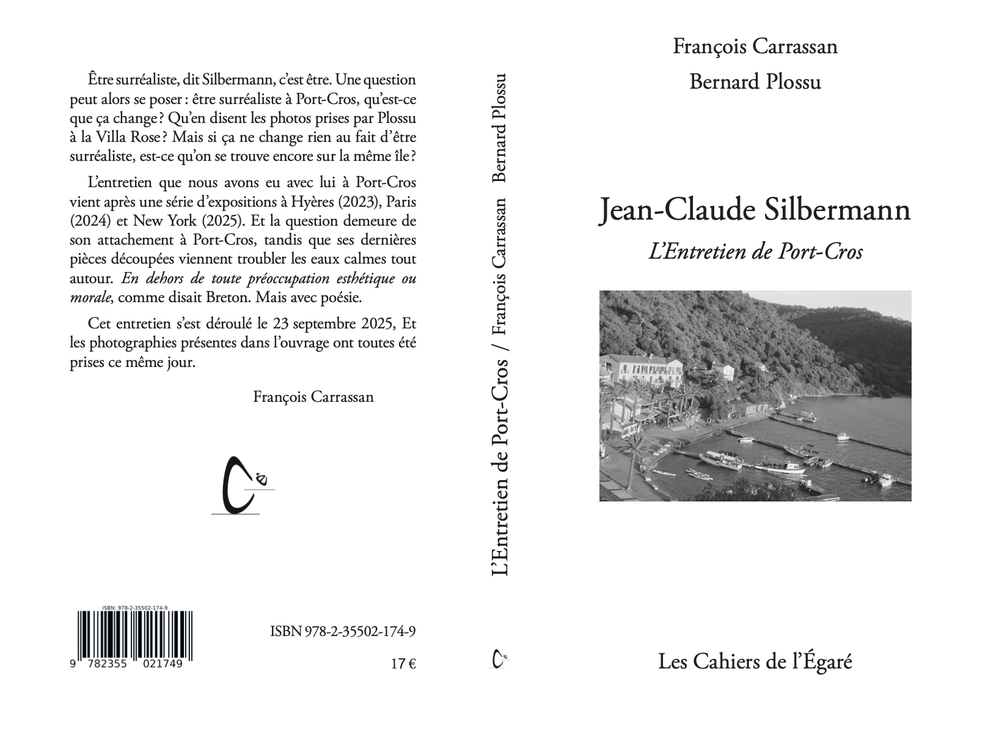
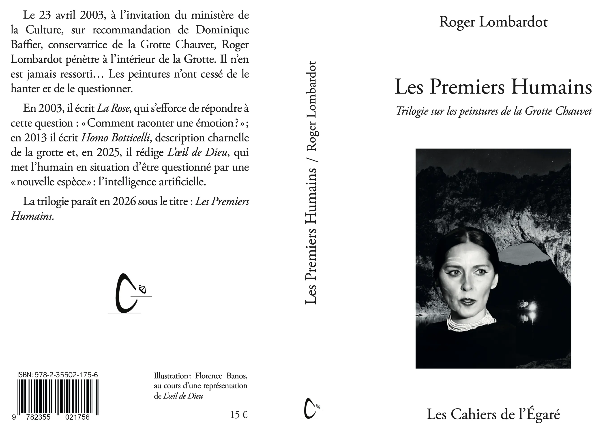

La mort d'assez près - Marc Israël-Le Pelletier
On n'apprend pas aux garçons à se maquiller
En quatorze nouvelles écrites dans des styles différents, de l’humour noir au drame dans la pure tradition romantique, l’auteur dévoilent nos rapports délicats avec la finitude et la conscience que nous en avons.

408 pages, 14X20,5 PVP 20€Aussi, depuis ma mort, j’erre comme une âme en peine, au rez-de-chaussée d’un grand magasin, dans le département des cosmétiques. Je me glisse entre les comptoirs de L’Oréal, Es- téeLauder, Helena Rubinstein, Shiseido, Bourjois et d’autres marques connues ou moins connues, et j’observe attentive- ment les démonstratrices expliquant aux jeunes femmes qui les entourent, et à celles qui ne le sont plus mais qui veulent en- core paraître, comment appliquer avec précisionun eye-liner, un mascara, comment choisir le fond de teint et le blush qui conviennent parfaitement à leur peau, le fard à paupières qui met en valeur la couleur de leurs yeux, le rouge à lèvres mat, nacré, ou le gloss qui rendra leurs lèvres si vivantes. Et tous les jours j’en apprends un peu plus, et lorsque je saurai, que je maî- triserai parfaitement l’art du maquillage, alors je pourrai enfin parcourir tes rêves, maman, sans que la pâleur fantomatique de mes traits ne les transforme en cauchemars.
ISBN : 978-2-35502-158-9
L'Entretien de Port-Cros - François Carrassan et Bernard Plossu
Être surréaliste, dit Silbermann, c'est être. Une question peut alors se poser : être surréaliste à Port-Cros, qu'est-ce que ça change? Qu'en disent les photos prises par Plossu à la Villa Rose? Mais si ça ne change rien au fait d'être surréaliste, est-ce qu'on se trouve encore sur la même île ?

L'entretien que nous avons eu avec lui à Port-Cros vient après une série d'expositions à Hyères (2023), Paris
(2024) et New York (2025). Et la question demeure de son attachement à Port-Cros, tandis que ses dernières pièces découpées viennent troubler les eaux calmes tout autour. En dehors de toute préoccupation esthétique ou morale, comme disait Breton. Mais avec poésie.
Cet entretien s'est déroulé le 23 septembre 2025, Et les photographies présentes dans l'ouvrage ont toutes été prises ce jour même.
François Carrassan
ISBN : 978-2-35502-174-9
Les Premiers Humains - Trilogie sur les peintures de la Grotte Chauvet - Roger Lombardot

158 pages, 13,5X20,5 PVP 15€Le 23 avril 2003, à l’invitation du ministère de la Culture, sur recommandation de Dominique Baffier, conservatrice de la Grotte Chauvet, Roger Lombardot pénètre à l’intérieur de la Grotte. Il n’en est jamais ressorti… Les peintures n’ont cessé de le hanter et de le questionner. En 2003, il écrit La Rose, qui s’efforce de répondre à cette question : « Comment raconter une émotion ? » ; en 2013 il écrit Homo Botticelli, description charnelle de la grotte et, en 2025, il rédige L’œil de Dieu, qui met l’humain en situation d’être questionné par une « nouvelle espèce » : l’intelligence artificielle.
La trilogie paraît en 2026 sous le titre : Les Premiers Humains.
ISBN : 978-2-35502-175-6
La Nuit - Collection Liberta
 92 pages, 13,5X20,5 PVP 16€
92 pages, 13,5X20,5 PVP 16€
De qui sommes-nous les fils ?
Le fil du temps.
Le temps continue de se dérouler.
Le choix invisible.
La fracture du sens.
La Palingénésie.
Mon départ.
Une première approche vers le temps de la Terre.
Puis arriva le temps de l’Homme.
Le siècle des Lumières.
Le droit au bonheur.
Vie, sens et beauté.
La culture de la vie.
Nos dernières révoltes.
Mon retour.
Les trois dernières révoltes ou la quête de dignité et de liberté.
Le poujadisme la colère des indépendants.
Le CID-unati la révolte des petits commerçants.
Les gilets jaunes la souffrance des invisibles.
La révolte de Mai 68.
Le fond des révoltes.
Le fond des révoltes.
Charles de Gaulle et l’ombre du capitalisme.L’économie hégémonique.
La concentration du pouvoir économique.
Une croissance qui dévore ses propres enfants.
L’illusion du progrès infini.
Le coût humain de l’hégémonie.
Les illusions du progrès.
Nos erreurs les plus courantes.
Le culte de la vitesse..
La technique comme nouvelle religion.
Le transhumanisme : l’homme augmenté ou l’homme diminué ?
La fatigue moderne : trop de tout, pas assez d’essen-tiel.
La perte d’émerveillement.
Une suite prévisible.
Sortir du chemin de l’égarement.
Trop de lois tue la loi.
La crise de l’exemple : quand le laid devient la norme.
La culture de la mort.
Postface
ISBN : 978-2-35502-160-2
Rallumons les lumières - Collection Liberta
 112 pages, 13,5X20,5 PVP 20€
112 pages, 13,5X20,5 PVP 20€
Qu’est-ce qui distingue la philosophie de l’anthropologie.
Chapitre I Comprendre pour ne plus avoir peur
L ’Anthropocène : une crise de l’homme avant d’être une crise de la Terre
Trop de savoir, pas assez de sens.
Quand la technique oublie l’homme.
Chapitre II retrouver l’axe humain
Oublier que l’on sait.
L ’homme relationnel.
La joie de vivre comme boussole anthropologique.
Chapitre III La Transociabilité
La Transociabilité c’est quoi ?
La transociabilité pour rééquilibrerles technosciences.
La transociabilité : une philosophie du lien dans l’âge des technosciences.
La transociabilité : l’art perdu d’équilibrer la puissance par la sagesse.
Décider sans écraser.
Chapitre IV Rallumer les lumières.
De la peur à la responsabilité joyeuse.
La culture de la vie.
Réapprendre à habiter le temps long.
Chapitre V Semer sans prétendre régner
Cercles positifs et minorités agissantes.
L ’exemplarité plutôt que la leçon..
Allumer une lumière suffit parfois.
Épilogue
Ce qui dépend encore de nous.
ISBN : 978-2-35502-161-9
Le chemin des possibles - Collection Liberta
 130 pages, 13,5X20,5 PVP 20€
130 pages, 13,5X20,5 PVP 20€
Le Chemin des possibles.
Là où tout commence.
Le baptême.
Le village et l’homme raisonnable.
Là où tout commence vraiment.
L’homme, la machine et ce qui résiste.
Ceux qui soutiennent l’économie du réel.
Victor se rendit en Bresse.
Le soir tomba doucement sur la Bresse.
Les inondations.
Après l’incendie Le feu et ce qui l’appelle.
Violence et migration.
Deuxième partie de la réunion.
Chômage et dévalorisation du travail.
Réunion : Quand une économie fabrique des inutiles.
Crise sanitaire et phytosanitaire.
Ce qui fait disparaître la vie.
L’économie hégémonique.
Diagnostic politique d’un système devenu dangereux pour la vie.
I - Qu’est-ce qu’une hégémonie ?
II – Quand l’économie devient hégémonique.
III – Quelques chiffres qui donnent le vertige.
V – Quand le rêve tourne au cauchemar.
V – La méthode : mensonge, diversion, verbiage.
VI – Démystifier l’économie hégémonique.
VII – Quand même le système s’alarme.
VIII – Les risques majeurs d’une économie sans limites.
IX – Les nouveaux despotes.
X – Messieurs les puissants, souvenez-vous.
XI – Vous êtes responsables.
XII – Nous ne sommes pas naïfs.
Un odieux tour de passe-passe.
Un entêtement coûteux.
La promesse briséede la modernité agricole.
L’agriculture familiale.
Les écosystèmes nous parlent.
Un monde irremplaçable : les paysans.
La charte sur le parrainage..
Article 1 – Objet du parrainage.
Article 2 – Principes fondateurs.
Article 3 – Formes de parrainage.
Article 4 – Engagements des parrains.
Article 5 – Engagements des paysans parrainés.
Article 6 – Gouvernance et cadre éthique.
Article 7 – Portée de la charte.
Ce qui ne pouvait pas être dit avant.
Marie Miroir.
Postface
ISBN : 978-2-35502-162-6